Host/Target Setup and Configuration
This topic describes how to setup the networking between the host system and the target system, target user account setup and environment for cross-compilation.
DRIVE OS Linux ships with an application that allows the end-user to setup a user account using wizard prompts in the UART interface. When the target device boots for the first time after flashing, it automatically runs OEM-config.
Before the target system boots for the first time, you must start a serial application on the host computer. For more instructions, check the Terminal Emulationsection.
DRIVE OS Linux Configuration on the Target
Use the following steps to set up the DRIVE OS LINUX on the target:
-
Allow the system to power on and boot up the operating system.
Once the operating system boots, OEM-config will start and splash the UI on the terminal as shown below. EULA prompt provides
Yes,No, andRefreshoptions. Choosing an option and pressing ENTER executes the choice to OEM-config. To accept the EULA, chooseYes. To reject chooseNo. To display the EULA contents again, chooseRefresh.Accept the EULA to continue OEM-config to the next steps. Rejecting the EULA safely powers down the system.
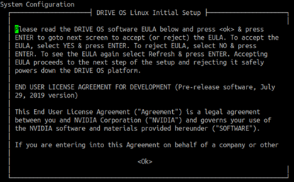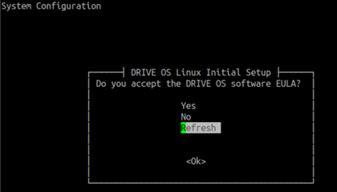 -
The first user created is an admin user. Non-admin users can be added in later
steps. Click OK.
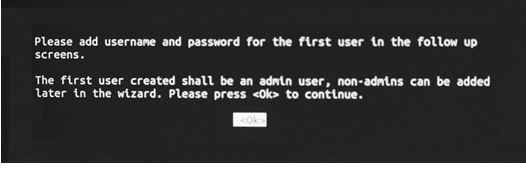
-
Enter the full real name of the user.
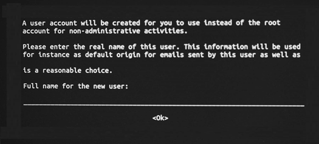
-
Prepare to create a username and password for the first (admin) user.
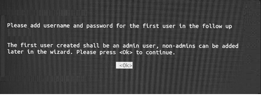
-
Create a username and password for the first (admin) user.
You must provide a username that satisfies the following regex:
^[a-z_][a-z0-9_-]{0,31}$This implies that:
- The username must not be empty.
- The username must start with only lowercase letters or an underscore(_).
- The second and subsequent characters can be a lowercase letters, numbers, underscores(_), or a hyphen(-).
- The username must be less than or equal to 32 characters long.
-
Create a password for the first (admin) user.
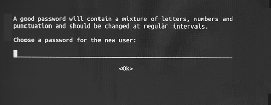
-
Re-enter the same password for your user account, then select OK and press
ENTER.
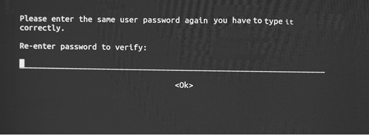
-
The system will warn the user if the password is weak and recommends for a
correction. Select
Noand press ENTER to go back step 4 and change the password. Otherwise, selectYesand press ENTER to move forward.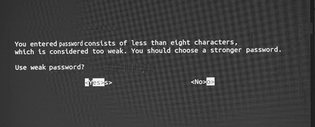The secure login feature from NVIDIA DRIVE OS provides better security for SSH connections by using ECDSA based algorithms.
It also offers persistence of SSH keys and user account metadata across flashing so that the system recognizes the host and the users even after a system reflash.
NVIDIA recommends enabling the secure login feature, and to enable select
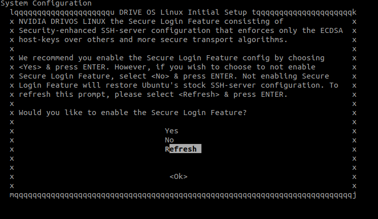Yesand press ENTER. Else, if you wish to disable this feature, selectNoand press ENTER. Entering<Refresh>and ENTER displays the secure login feature prompt message again. -
If you would like to add another user, select
Yes. Otherwise, selectNo.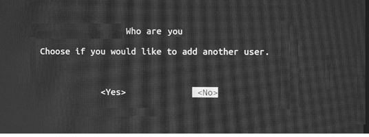 -
After this prompt, OEM-config configures the system. The end-user must ensure not
to power off the system after pressing
<Ok>below. After about 10 seconds, you get the prompt from step 9.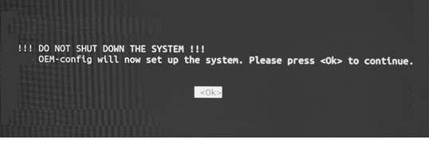 -
At this point, OEM-config has completed the system setup. Press
<Ok>to let the system boot to the login prompt.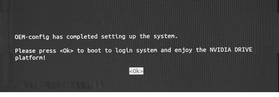
DRIVE OS Linux User Management
Warning: Whenever any change is made to the filesystem such as adding/modifying/removing user login information, ensure that all data is saved prior to resetting. Execute a software shutdown command, such as halt, shutdown, or reboot to the target system to avoid data corruption; otherwise, file system corruption may occur. Once the target system is shut down, you may use physical/electrical shutdown or reset commands, such as tegrareset or aurixreset in the AURIX command terminal.
NVIDIA DRIVE OS Linux uses standard Ubuntu tools to manage user accounts. Only admin-users (such as sudoers or root user) can change user accounts. The following steps assume that you are an admin user. Enter the password of your current user.
Steps to Change the Username and Password
Warning: Whenever any change is made to the filesystem such as adding/modifying/removing user login information, ensure that all data is saved prior to resetting. Execute a software shutdown command, such as halt, shutdown, or reboot to the target system to avoid data corruption; otherwise, file system corruption may occur. Once the target system is shut down, you may use physical/electrical shutdown or reset commands, such as tegrareset or aurixreset in the AURIX command terminal.
Changing the Username
- Enable administrative account.
- Enable the root administrative account by setting a password for the root account. Use the following command to set a password for root account. You will be prompted for the password of your current user.
$ sudo passwd - Close existing user sessions.
- Log out of all sessions, including GUI and consoles of the user that you are changing the username for. You cannot change the username if a session is still alive.
- Use the following command to exit console sessions:
$ exit - Log into the system as root account.
- After completing step #2, you will be presented with a login prompt. Proceed to log in using the credentials you established for the root account.
- Change the username.
- Change the username of the user from
${USERNAME1}to${USERNAME2}with the following commands:$ usermod -m -d /home/${USERNAME2} -l ${USERNAME2} ${USERNAME1} $ groupmod -n ${USERNAME2} ${USERNAME1} - Log out of the root account using the following
command:
$ exit
- Change the username of the user from
You have successfully changed the username. Proceed to log in with the new username.
Changing the Password
- Enter the following command to update
password.
$ passwdEnter your existing password and enter the new password.
Changing password for <user>. (current) UNIX password: Enter new UNIX password: Retype new UNIX password: passwd: password updated successfully. - Enter the current password and then the new password.
Adding a Non-Admin User
- Execute
adduserwith the new username as input and fill in the information when prompted.$ sudo adduser <user>Note:Non-Admin users can be added to specific groups to get privileged access to components that are otherwise accessible only if the user is root. See Common Groups used in DRIVE OS Linux Filesystems .
Ensure the Non-Admin user is not added to the 'sudo' or 'adm' group, as this will allow them to run any commands using sudo.
-
Execute usermod to add the user to the required groups as per the use case
requirements of the user.
$ sudo usermod -aG <groups> <user>
Example
$ sudo adduser test
Adding user `test' ...
Adding new group `test' (1001) ...
Adding new user `test' (1001) with group `test' ...
Creating home directory `/home/test' ...
Copying files from `/etc/skel' ...
Enter new UNIX password:
Retype new UNIX password:
passwd: password updated successfully
Changing the user information for test
Enter the new value, or press ENTER for the default
Full Name []:
Room Number []:
Work Phone []:
Home Phone []:
Other []:
Is the information correct? [Y/n] YAdding an Admin User
-
Create a non-admin user
<user>by following the instructions in the section Adding a Non-Admin User. -
Make the created user
<user>an admin user by adding the user to all the groups specified in 'Common Groups used in DRIVE OS Linux Filesystems' following the instructions in the section Adding a Non-Admin User above.
Common Groups Used in DRIVE OS Linux Filesystems
|
Group |
Description |
|---|---|
|
adm |
Group adm is used for system monitoring tasks. Members of this group can read many log files in /var/log. |
|
audio |
This group can be used to give a set of users, access to sound devices. (e.g., sound timers) |
|
dialout |
Members of this group gets full and direct access to serial ports. |
|
plugdev |
Allows members to mount (only with the options nodev and nosuid, for security reasons) and umount removable devices through pmount. |
|
sudo |
Members of this group can execute any command with sudo (/etc/sudoers) |
|
video |
This group can be used to give a set of users access to a video device (like the framebuffer, the videocard or a webcam). Users may require to be added to this group to run DRIVE OS graphics samples. |
|
debug |
This group can be used to give a set of users, access to profile and debug data for GPUs in the system. |
Removing a User
The steps to remove an admin or non-admin users are identical. Removing users using the
steps below also removes their /home/<user> directory.
To remove a user, enter:
$ sudo deluser --backup --remove-home <user>This backs up and creates a tarball (<user>.tar.bz2) of the
deleted user data in the current working directory.
Setting Password as an Admin User
As admin-users are sudoers, they can set the password of any user account with username
<username> using the command below. Enter the password of your
current user.
$ sudo passwd <username>
Enter new UNIX password:
Retype new UNIX password:
passwd: password updated successfully.Updating a Password as a Non-Admin User
Non-admin users can only update their own passwords. The steps below update your user account's password:
- Enter the following command:
$ passwd -
Enter your existing password and enter the new password.
Changing password for <user>. (current) UNIX password: Enter new UNIX password: Retype new UNIX password: passwd: password updated successfully. - Enter the current password and then the new password.
Disabling a User Account
The following step allows an admin user to disable the user account with a username $USER:
$ sudo usermod --expiredate 1 $USERDisabling the user account ensures that the account is unusable in any context in the filesystem. The disabled user ($USER) can be re-enabled with the following command:
$ sudo usermod --expiredate "" $USERDisabling the Secure Login Feature
Disabling Secure Login Feature (SLF) removes NVIDIA DRIVE OS security SSH server config and replaces it with stock ubuntu SSH server config. There are two (2) options to disable the secure login feature:
-
If the user wants to disable the SLF, the first option is available during the target setup process using OEM-config and choosing
Nofor the following prompt:Would you like to enable or disable the Secure Login Feature? -
The second option is to manually copy the ubuntu stock SSH server config to the system's SSH server config:
-
sudo cp /usr/share/openssh/sshd_config /etc/ssh/sshd_config -
sudo systemctl restart ssh
-
-
sudo cp /etc/nvidia/configs/sshd_config.driveos /etc/ssh/sshd_config -
sudo systemctl restart ssh
DRIVE OS Linux SSH Server
The shipped NVIDIA DRIVE OS LINUX filesystem driveos-oobe-rfs contains SSH server. However, driveos-core-rfs does not include SSH server. Use the steps below to install SSH server.
Install/Update SSH Server
- Ensure platform is connected to the internet
- Update the existing apt database:
# apt-get update -
Install SSH server package:
# apt-get install ssh -
When prompted by apt-get (see prompt below), choose the option
keep the local version currently installedto ensure DRIVE OS SSH configuration is applied.
Setting Up SSH Server Service
After SSH server is available in the filesystem, use the steps below as root user to start and configure SSH server service to run on every boot:
- Remove the stamp file to unblock SSH server:
$ sudo rm -f /etc/ssh/sshd_not_to_be_run -
Start SSH server service on the current boot:
$ sudo systemctl start ssh -
Start service to add SSH host-keys to the target:
$ sudo systemctl start nv_ssh_host_keysAfter completing the steps above, the SSH server service is started. Additionally, it runs on every boot. SSH clients may now connect to this SSH server.
SSH Server Configuration File
NVIDIA DRIVE OS Linux contains an SSH server configuration file sshd_config that pre-configures the following :
- Permits only connections with Elliptic Curve Digital Signature Algorithm (ECDSA) host key.
- Disables compression.
- Permits specific key exchange, host signature, and session encryption algorithms.
NVIDIA DRIVE OS Linux recommends that you configure strong security options for the following SSH parameters:
- Client Verification via key exchange: Parameter
KexAlgorithmsfrom sshd_config to set the supported key type(s) for client verification. - Host Signature: Parameter
HostbasedAcceptedKeyTypesfrom sshd_config to set the supported key type(s) for host verification. - Session Encryption: Parameter
Ciphersfrom sshd_config to set the supported SSH session encryption algorithm(s).
The table below suggests recommended strong values to enable recommended security features; the default option is highlighted in the table below.:
|
Option |
Client Verification |
Host Signature |
Session Encryption |
|---|---|---|---|
|
1 |
ecdh-sha2-nistp256 ECDH [SP 800-56A] over secp256r1 [SEC2-V2] with SHA-256 [FIPS 180-4] |
ecdsa-sha2-nistp256-cert-v01@openssh.com ECDSA [FIPS 186-4][ANS X9.62] over secp256r1 [SEC2-V2] with SHA-256 [FIPS 180-4] |
aes128-gcm@openssh.com GCM [SP 800-38D] with AES-128 [FIPS 197] |
|
2 |
ecdh-sha2-nistp384 ECDH [SP 800-56A] over secp384r1 [SEC2-V2] with SHA-384 [FIPS 180-4] |
ecdsa-sha2-nistp384-cert-v01@openssh.com ECDSA [FIPS 186-4][ANS X9.62] over secp384r1 [SEC2-V2] with SHA-384 [FIPS 180-4] |
aes256-gcm@openssh.com GCM [SP 800-38D] with AES-256 [FIPS 197] |
|
3 |
(Default) ecdh-sha2-nistp521 ECDH [SP 800-56A] over secp521r1 [SEC2-V2] with SHA-512 [FIPS 180-4] |
(Default) ecdsa-sha2-nistp521-cert-v01@openssh.com ECDSA [FIPS 186-4][ANS X9.62] over secp521r1 [SEC2-V2] with SHA-512 [FIPS 180-4] |
(Default) aes256-gcm@openssh.com GCM [SP 800-38D] with AES-256 [FIPS 197] |
Switching Options in the SSHD Configuration File
DRIVE OS Linux contains the snippets for all three (3) options with exactly one option (option 3) enabled as shown below. The options 1, 2, and 3 are mutually exclusive and exactly only one option can be active at a time.
# option 1
# Use algorithms as per DRIVE recommended options: 1,2, or 3
#KexAlgorithms ecdh-sha2-nistp256
#HostbasedAcceptedKeyTypes ecdsa-sha2-nistp256-cert-v01@openssh.com
#Ciphers aes128-gcm@openssh.com
# option 2
#KexAlgorithms ecdh-sha2-nistp384
#HostbasedAcceptedKeyTypes ecdsa-sha2-nistp384-cert-v01@openssh.com
#Ciphers aes256-gcm@openssh.com
# option 3 (default)
KexAlgorithms ecdh-sha2-nistp521
HostbasedAcceptedKeyTypes ecdsa-sha2-nistp521-cert-v01@openssh.com
Ciphers aes256-gcm@openssh.comTo switch from one option to another
- Comment out the three (3) lines corresponding to the current option.
- Uncomment the three (3) lines corresponding to the new option.
- Restart SSHD using the command below as the root
user:
$ sudo systemctl restart ssh
As an example, assume that the current option is option 3 (from the snippet above).
To switch to option 2, execute the following steps:
- Comment out the three (3) lines following
# option 3. - Uncomment the three (3) lines from the line below
# option 2until the line above# option 3. - Restart SSHD using the command below as the root
user:
$ sudo systemctl restart ssh - SSHD now uses encryption algorithms from option 2.
SSH Key-Based Authentication from Clients to Server
DRIVE OS Linux shipped SSHD tries key-based authentication first and falls back to password-based authentication when the former is unavailable. The following sections describe how to set up a user-specific authentication key, add it to the list of trusted-keys, and use the key to authenticate (instead of the password) to the SSH server.
Create a new key-pair at the client side
The first step is to create a public/private key pair using the command:
$ ssh-keygen -t ecdsaContinue through the prompts by pressing ENTER and these steps save the key to ~/.ssh.
Set up the server side to register key
The next step is to add the contents of the client (user-specific authentication) public key ~/.ssh/id_ecdsa.pub into the text file ~/.ssh/authorized_keys.
Use the new key at the client side to connect to the server
Only the user who created the key can log in to the SSHD server (using the registered keys). At the client side, connect to the server using the ssh command:
$ ssh <user>@<target_ip>The setup done above is one-directional (i.e., from client to server). To similarly setup in a reverse direction (i.e., from server to client), the above steps must be swapped with regards to client/server and executed to setup key-based authentication from the server to client-side.
Enabling VNC Remote Access
$ sudo apt update
$ sudo apt install x11vncVNC command when running X server manually:
$ sudo x11vnc -display :0 -noxrecord -noxfixes -noxdamage -forever -loop –nopw- Configure the target desktop for auto
login:
$ sudo vi /etc/gdm3/custom.conf - Uncomment/edit the following lines as shown
below:
# Enabling automatic login AutomaticLoginEnable = true AutomaticLogin = <user> - Save/exit the file and restart the gdm
service:
$ sudo systemctl restart gdm3.service - Start the VNC
server:
$ sudo x11vnc -display :0 -noxrecord -noxfixes -noxdamage -forever -loop -nopw -auth /run/user/1000/gdm/Xauthority
Setting Up Networking on the Host and Target
Use the information in this topic to set up the network between an Ubuntu host and your NVIDIA DRIVE™ platform. The steps to set up networking includes configuring the DHCP and NFS servers, configuring networking on the host computer, etc.
Configuring the Network Interface
Configuring the network interface for your device requires:
- Connecting the board to the host Linux development system.
- Configuring the network interface.
Connecting the Target to the Host Using the Network Interface
You can connect your target board to the Linux Ubuntu host machine using a private LAN. This private LAN is not the LAN connecting the host to the Internet. Connect through Onboard 1Gb Ethernet connector.
To use onboard HMTD connector to connect the board and host on the private LAN
- To use onboard 1Gb ethernet, connect to the DRIVE platform 1 Gb RJ45 Ethernet port on the target as described in the NVIDIA DRIVE AGX Orin Developer Hardware Quick Start Guide.
- Obtain a CAT-6 crossover patch cable and plug one of the RJ45 male ends into the RJ45 port of target from step 1.
- Plug the other male end of the CAT-6 crossover patch cable into the RJ45 port of HOST machine or to RJ45 port of USB-to-Ethernet adapter (e.g., Dlink DUB-E100 (smsc95xx)) connected on your host machine.
Configuring the Private LAN to the Target Network
Use the following procedure to configure the host interface for the private LAN connected to the target platform. The procedure assumes eth1 is the Ethernet port on the host PC connected to the NVIDIA board.
To configure the private LAN to the target
-
Determine which host
eth<n>port is connected to the target, where<n>is the port instance.- Find the eth device with the following
command:
dmesg | grep -i eth - In the grep results, identify the
eth<n>port for the Dlink DUB-E100 (smsc95xx) or similar USB Ethernet adapter. -
For example, the following
dmesgresult indicates that theeth1port is connected to the target:[1310932.166153] smsc95xx 2-5.1:1.0: eth1: register 'smsc95xx' at usb-0000:00:1d.7-5.1, smsc95xx USB 2.0 Ethernet, 00:04:4b:1b:32:6b
- Find the eth device with the following
command:
-
On the host, find and edit the following file:
/etc/network/interfacesThis file is read-only, so you must open it with administrative privileges, for example:
sudo vim /etc/network/interfaces -
Depending on your connection at the host, modify the interfaces file:
- Additional NIC card/adapter: Add the following to the interfaces
file:
auto eth1 iface eth1 inet static address 10.0.0.1 netmask 255.255.255.0 - USB Ethernet adapter: Add the following to the interfaces
file:
auto eth1 allow-hotplug eth1 iface eth1 inet static address 10.0.0.1 netmask 255.255.255.0 post-up /etc/init.d/isc-dhcp-server restart
- Additional NIC card/adapter: Add the following to the interfaces
file:
-
Restart the host's networking with the following command:
sudo /etc/init.d/networking restart - Hard reboot the host system.
Configuring the DHCP and NFS Server on the Host
The DHCP server on the host is used to assign the IP address to the target system and the NFS server is used to mount the root file system on the NVIDIA target system using NFS.
If the DHCP and NFS servers are not yet installed on the host, the installer installs and configures them. Alternatively, those servers can be installed and configured as follows.
To set the DHCP server
- Install the DHCP server on the host:
sudo apt-get install isc-dhcp-server -
Specify the interface on which the server should listen for leasing an IP address
from the target over the private LAN.
- Locate and edit the following
file:
/etc/default/isc-dhcp-serverThis file is read-only, so you must open it with administrator privileges.
- Modify the isc-dhcp-server file to set INTERFACES to the eth<n> connection
you determined when connecting your network interface.
For example, add the following line if the DHCP server should listen on eth1 interface.
INTERFACES="eth1"Changing the interface to "eth3" can result in the following error:
udevd[148]: error changing net interface name eth0 to eth3: Device or resource busy
To resolve this error, delete the
/etc/udev/rules.d/70-persistent-net.rulesfile.
- Locate and edit the following
file:
-
Configure your host DHCP server for the target interface.
- Locate and edit the following
file:
/etc/dhcp/dhcpd.confBecause the file is read-only, open it with administrator privileges.
- Modify the dhcpd.conf file to contain the
following:
ddns-update-style none; allow bootp; subnet 10.0.0.0 netmask 255.255.255.0 { option routers 10.0.0.1; option domain-name <domain_name>; option domain-name-servers <DNS1>, <DNS2>, ... ; default-lease-time 345600; max-lease-time 31557600; range 10.0.0.2 10.0.0.254; option root-path "10.0.0.1:/<top>/drive-linux/ /filesystem/targetfs,wsize=8192,rsize=8192,v3"; }Where:
-
<domain_name>is your company domain name. -
<DNS1>,<DNS2>are the DNS servers that you already added to the/etc/resolv.conffile on your host system. Multiple DNS servers are separated by commas. For example, the Google public DNS IP addresses are formatted as:8.8.8.8, 8.8.4.4
-
- Locate and edit the following
file:
-
Restart the DHCP server:
sudo /etc/init.d/isc-dhcp-server restart
To set the NFS server
- Install the NFS server on the host using
apt-get:sudo apt-get install nfs-kernel-server nfs-common portmap -
Locate and edit the following file:
/etc/exportsAdd the corresponding path to the target file system:
<top>/drive-linux *(async,rw,no_root_squash,no_all_squash,no_subtree_check)This change exports the target file system.
-
Restart the NFS server:
sudo /etc/init.d/nfs-kernel-server restart sudo exportfs -a
To enable Internet access from the target
On the Linux host, enter these commands to enable settings on the host:
$ sudo sysctl -w net.ipv4.ip_forward=1
$ sudo iptables -F
$ sudo iptables -t nat -A POSTROUTING -o eth1 -j MASQUERADE Where eth1 is the interface connected to the network that is connected
to the Internet on the host.
$ sudo iptables -t nat -A POSTROUTING -o eth0 -j MASQUERADEWhere eth0 is the private LAN interface connected to target from the
host.
Configuring Static IP to the Device
- Create the
.yamlconfiguration file for netplan in/etc/netplanif it does not already exist. A number prefix is used for orderly processing. For more information, seeman netplan.Note: Replace eth0 with the interface name of your system.sudo cat >/etc/netplan/01-network-manager-all.yaml network: version: 2 renderer: networkd ethernets: eth0: # Use your interface name dhcp4: no dhcp6: no addresses: - 10.0.0.X/22 # Your IP address gateway4: 10.0.0.1 # Your gateway nameservers: search: [nvidia.com, client.nvidia.com, nvclient.nvidia.com] #Your corp domain names addresses: [DNS1,DNS2] - After the editing of the
01-network-manager-all.yamlfile is complete, apply the settings using the following command.sudo netplan apply - Review the configuration.
ip addr ip show